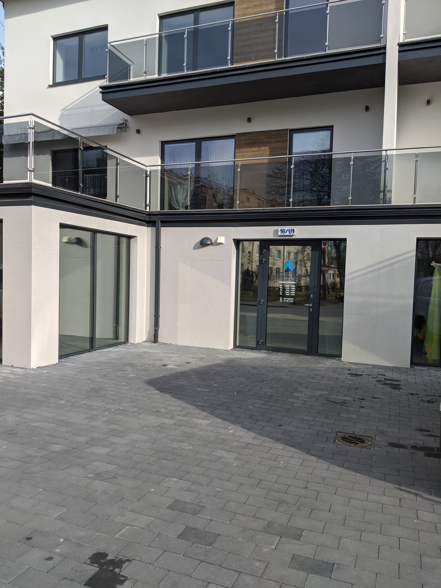
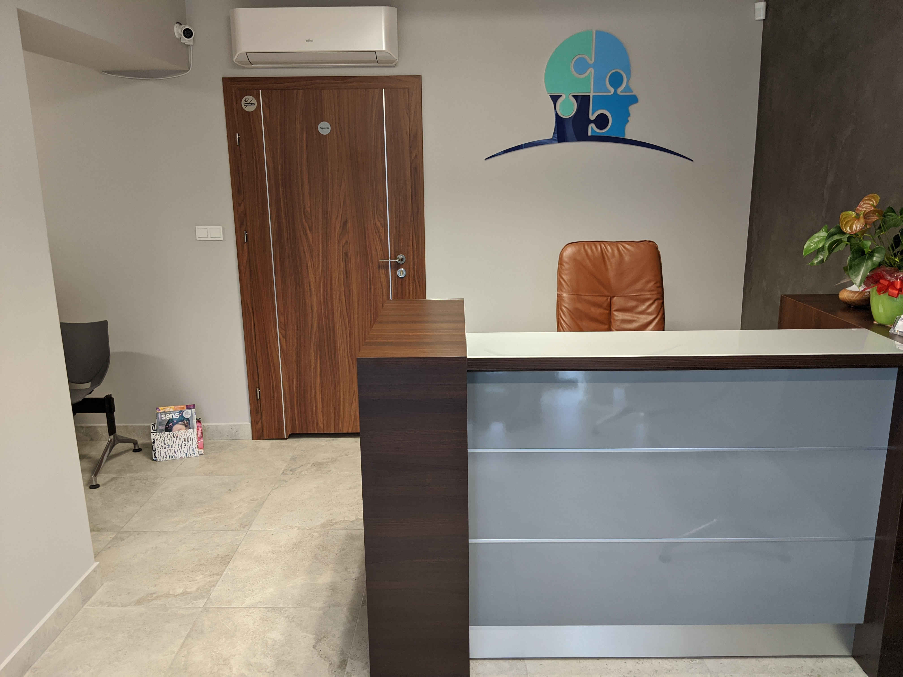

Lekarz specjalista psychiatra. Ukończyłam Wydział Lekarski Akademii Medycznej w Warszawie. Wiedzę i doświadczenie zdobywałam w czasie kształcenia specjalizacyjnego w Klinikach Psychiatrii w Krakowie i Lublinie. Odbyłam kształcenie w zakresie psychoterapii w Klinice Psychoterapii w Krakowie. Swoją wiedzę pogłębiam uczestnicząc w szkoleniach i konferencjach psychiatrycznych. Od 2000 roku prowadzę gabinet psychiatryczny.
| Poniedziałek | 13:00 - 18:00 |
|---|---|
| Wtorek | 8:30 - 13:30 |
| Środa | 8:30 - 13:30 |
| Czwartek | 13:00 - 18:00 |
| Piątek | 8:30 - 13:30 |

